from fastcore.all import *
from iomeval.readers import find_eval, load_evals, eval_url, get_report_urls
from mistocr.core import read_pgs
import pandas as pd
from iomeval.pipeline import run_pipeline, batch_run
import seaborn as sns
import matplotlib.pyplot as plt
from matplotlib.patheffects import withStroke
pd.set_option('display.max_colwidth', None)Plan
When IOM evaluation reports are re-tagged after any changes: updated prompts, evaluation frameworks (gcms, srf enablers (enbs), …), I want to: - have an overview of what changed scores, ranks per and accross reports - identify most critical changes to be further investigated by domain experts
models = [
'claude-sonnet-4-5',
'claude-sonnet-4-6',
'claude-opus-4-5-20251101'
]Setup
ROOT_PATH = Path.home() / 'iomeval'
DATA_PATH = ROOT_PATH / 'data'
RESULTS_PATH = DATA_PATH/ 'results'
EVALS_PATH = ROOT_PATH / 'nbs/files/test/evaluations.json'
# Contains latest backed up data before new deployment
LATEST_TAG_PATH = Path.home() / 'tagapp/backups/20260311_115159/data'
evals = load_evals(EVALS_PATH)Utils
def get_deployed_ids(backup_path):
"List of report IDs currently deployed (from tagapp backup)"
return Path(backup_path).ls(file_exts='.json').map(lambda p: p.stem)get_deployed_ids(LATEST_TAG_PATH)[:2]['8dd2261100ff5d714e73b411eed043d5', '1d7e6d2d445145d1d350b48b72b36681']def load_result(eval_id, base_path):
"Load a result JSON by eval_id from base_path"
return (Path(base_path)/f'{eval_id}.json').read_json()def is_remapped(eval_id, base_path, backup_path):
"Check if report mappings differ between current results and deployed backup"
current = load_result(eval_id, base_path)
deployed = load_result(eval_id, backup_path)
return current.get('mappings') != deployed.get('mappings')def info_evl(evl_id): return first([o for o in evals if o.id == evl_id])info_evl('0d4309b702e00faac631be8d609934ce')Fifth Evaluation of the IOM Development Fund
Year: 2025 | Organization: IOM | Countries: Worldwide
Documents: 5 available
ID: 0d4309b702e00faac631be8d609934ce
Data loading
lut_id_staff = {
'4341695461234eee3deb51ac68871109': 'Davide',
'6c3c2cf3fa479112967612b0baddab72': 'Davide',
'49d2fba781b6a7c0d94577479636ee6f': 'Davide',
'22cac1c000836253adc445993e101560': 'Davide',
'e8d9427f4a9094f68e17307faa567d8b': 'Davide',
'9992310969aa2f428bc8aba29f865cf3': 'Davide',
'a493c447cff3e03ca94024335d5c5c7a': 'Davide',
'06fd0949dc874f388686461c19d2669c': 'Davide',
'4c04ec0d3e651f7616190c6fc2dcfc18': 'Andres',
'891448b7a4bf12763ea0579dd67e289d': 'Andres',
'75bad4665ed458cce78740e3d86f72d0': 'Andres',
'f409b3f9a0671ec69a8591c425a45c1d': 'Andres',
'760568a15e144bcfb88dbbd50247dc51': 'Andres',
'56e6f2bc9f55a0c6d07341ddde1283db': 'rogers',
'1d7e6d2d445145d1d350b48b72b36681': 'rogers',
'dba9eb1220368d28682d8531108e767d': 'rogers',
'8dd2261100ff5d714e73b411eed043d5': 'rogers',
'316c47c9dc19c820f3217434d4b93b28': 'elma',
'9992310969aa2f428bc8aba29f865cf3': 'pip',
'e21305a89aeb76fafa8f4270392d463a': 'pip',
'0d4309b702e00faac631be8d609934ce': 'pip'
}# Reports requested by IOM CED evaluators for assessment
evls_test = ['8dd2261100ff5d714e73b411eed043d5', '1d7e6d2d445145d1d350b48b72b36681', '760568a15e144bcfb88dbbd50247dc51', '22cac1c000836253adc445993e101560', '4341695461234eee3deb51ac68871109', '9992310969aa2f428bc8aba29f865cf3', '316c47c9dc19c820f3217434d4b93b28', '0d4309b702e00faac631be8d609934ce', 'e8d9427f4a9094f68e17307faa567d8b', '75bad4665ed458cce78740e3d86f72d0', 'f409b3f9a0671ec69a8591c425a45c1d', 'dba9eb1220368d28682d8531108e767d', '56e6f2bc9f55a0c6d07341ddde1283db', '49d2fba781b6a7c0d94577479636ee6f', 'a493c447cff3e03ca94024335d5c5c7a', '06fd0949dc874f388686461c19d2669c', '6c3c2cf3fa479112967612b0baddab72', '891448b7a4bf12763ea0579dd67e289d', '4c04ec0d3e651f7616190c6fc2dcfc18', 'e21305a89aeb76fafa8f4270392d463a']#is_remapped('8dd2261100ff5d714e73b411eed043d5', DATA_PATH/'results', LATEST_TAG_PATH)evl = evls_test[0]; evl'8dd2261100ff5d714e73b411eed043d5'DATA_PATH /'results'/f'{evl}.json'Path('/app/data/iomeval/data/results/8dd2261100ff5d714e73b411eed043d5.json')is_remapped(evl, DATA_PATH/'results', LATEST_TAG_PATH)TrueData processing
def mappings2df(
evl_id:str, # evaluation ID
data_path:Path, # path to results data
) -> pd.DataFrame: # one row per (mapping_type, theme)
"Flatten a result's mappings into a DataFrame."
result = load_result(evl_id, data_path)
rows = [dict(mapping_type=mt, theme_id=m['theme_id'], theme_title=m['theme_title'], score=m['relevance_score'])
for mt,maps in result.get('mappings', {}).items() for m in maps]
return pd.DataFrame(rows)print(mappings2df(evl, RESULTS_PATH).head()) mapping_type theme_id theme_title score
0 enbs 1 Workforce 0.15
1 enbs 2 Partnership 0.42
2 enbs 3 Funding 0.18
3 enbs 4 Data and evidence 0.35
4 enbs 5 Learning and Innovation 0.72def delta_df(
evl_id:str, # evaluation ID
base_path:Path, # path to new results
backup_path:Path, # path to old results
) -> pd.DataFrame: # merged DataFrame with score_old/score_new
"Compare old and new mappings for a report."
old = mappings2df(evl_id, backup_path).rename(columns=dict(score='score_old'))
new = mappings2df(evl_id, base_path).rename(columns=dict(score='score_new'))
return old.merge(new, on=['mapping_type','theme_id'], how='outer')print(delta_df(evl, RESULTS_PATH, LATEST_TAG_PATH).head()) mapping_type theme_id theme_title_x \
0 ccps 1 Integrity, Transparency and Accountability
1 ccps 2 Equality, Diversity & Inclusion
2 ccps 3 Protection-centred
3 ccps 4 Environmental Sustainability
4 enbs 1 Workforce
score_old theme_title_y score_new
0 0.45 Integrity, Transparency and Accountability 0.38
1 0.72 Equality, Diversity & Inclusion 0.66
2 0.38 Protection-centred 0.42
3 0.12 Environmental Sustainability 0.05
4 0.28 Workforce 0.15 delta_df(evl, RESULTS_PATH, LATEST_TAG_PATH).query("mapping_type=='gcms' and theme_id=='23'")| mapping_type | theme_id | theme_title_x | score_old | theme_title_y | score_new | |
|---|---|---|---|---|---|---|
| 27 | gcms | 23 | Strengthen international cooperation and global partnerships for safe, orderly and regular migration | 0.68 | Strengthen international cooperation and global partnerships for safe, orderly and regular migration | 0.1 |
Transforms
def add_diffs(df):
"Add score_diff and new/dropped flags to a comparison DataFrame"
return df.assign(score_diff=df.score_new - df.score_old, is_new=df.score_old.isna(), is_dropped=df.score_new.isna())def add_ranks(df):
"Add old/new ranks (within each mapping_type, descending score) and rank_diff"
df = df.copy()
df['rank_old'] = df.groupby('mapping_type')['score_old'].rank(ascending=False, method='dense')
df['rank_new'] = df.groupby('mapping_type')['score_new'].rank(ascending=False, method='dense')
df['rank_diff'] = df['rank_old'] - df['rank_new']
return dfdef add_pct_change(df, min_score=0.05):
"Add percentage change, treating old scores below min_score as NaN to avoid division noise"
safe_old = df.score_old.where(df.score_old >= min_score)
return df.assign(pct_change=(df.score_new - df.score_old) / safe_old * 100)df = delta_df(evl, RESULTS_PATH, LATEST_TAG_PATH).pipe(add_diffs).pipe(add_ranks).pipe(add_pct_change)df.head()| mapping_type | theme_id | theme_title_x | score_old | theme_title_y | score_new | score_diff | is_new | is_dropped | rank_old | rank_new | rank_diff | pct_change | |
|---|---|---|---|---|---|---|---|---|---|---|---|---|---|
| 0 | ccps | 1 | Integrity, Transparency and Accountability | 0.45 | Integrity, Transparency and Accountability | 0.38 | -0.07 | False | False | 2.0 | 3.0 | -1.0 | -15.555556 |
| 1 | ccps | 2 | Equality, Diversity & Inclusion | 0.72 | Equality, Diversity & Inclusion | 0.66 | -0.06 | False | False | 1.0 | 1.0 | 0.0 | -8.333333 |
| 2 | ccps | 3 | Protection-centred | 0.38 | Protection-centred | 0.42 | 0.04 | False | False | 3.0 | 2.0 | 1.0 | 10.526316 |
| 3 | ccps | 4 | Environmental Sustainability | 0.12 | Environmental Sustainability | 0.05 | -0.07 | False | False | 4.0 | 4.0 | 0.0 | -58.333333 |
| 4 | enbs | 1 | Workforce | 0.28 | Workforce | 0.15 | -0.13 | False | False | 6.0 | 6.0 | 0.0 | -46.428571 |
df.sort_values('score_diff', key=abs, ascending=False).head(10)| mapping_type | theme_id | theme_title_x | score_old | theme_title_y | score_new | score_diff | is_new | is_dropped | rank_old | rank_new | rank_diff | pct_change | |
|---|---|---|---|---|---|---|---|---|---|---|---|---|---|
| 27 | gcms | 23 | Strengthen international cooperation and global partnerships for safe, orderly and regular migration | 0.68 | Strengthen international cooperation and global partnerships for safe, orderly and regular migration | 0.10 | -0.58 | False | False | 6.0 | 10.0 | -4.0 | -85.294118 |
| 11 | gcms | 1 | Collect and utilize accurate and disaggregated data as a basis for evidence-based policies | 0.72 | Collect and utilize accurate and disaggregated data as a basis for evidence-based policies | 0.20 | -0.52 | False | False | 5.0 | 7.0 | -2.0 | -72.222222 |
| 12 | gcms | 1 | Collect and utilize accurate and disaggregated data as a basis for evidence-based policies | 0.72 | Collect and utilize accurate and disaggregated data as a basis for evidence-based policies | 0.20 | -0.52 | False | False | 5.0 | 7.0 | -2.0 | -72.222222 |
| 5 | enbs | 2 | Partnership | 0.88 | Partnership | 0.42 | -0.46 | False | False | 1.0 | 2.0 | -1.0 | -52.272727 |
| 32 | gcms | 7 | Address and reduce vulnerabilities in migration | 0.88 | Address and reduce vulnerabilities in migration | 0.45 | -0.43 | False | False | 3.0 | 4.0 | -1.0 | -48.863636 |
| 7 | enbs | 4 | Data and evidence | 0.72 | Data and evidence | 0.35 | -0.37 | False | False | 3.0 | 3.0 | 0.0 | -51.388889 |
| 10 | enbs | 7 | Internal systems | 0.52 | Internal systems | 0.22 | -0.30 | False | False | 4.0 | 4.0 | 0.0 | -57.692308 |
| 15 | gcms | 12 | Strengthen certainty and predictability in migration procedures for appropriate screening, assessment and referral | 0.42 | Strengthen certainty and predictability in migration procedures for appropriate screening, assessment and referral | 0.12 | -0.30 | False | False | 8.0 | 9.0 | -1.0 | -71.428571 |
| 9 | enbs | 6 | Communication | 0.38 | Communication | 0.10 | -0.28 | False | False | 5.0 | 7.0 | -2.0 | -73.684211 |
| 24 | gcms | 20 | Promote faster, safer and cheaper transfer of remittances and foster financial inclusion of migrants | 0.32 | Promote faster, safer and cheaper transfer of remittances and foster financial inclusion of migrants | 0.06 | -0.26 | False | False | 10.0 | 12.0 | -2.0 | -81.250000 |
All evaluations processed
def all_deltas(
evl_ids:list, # evaluation IDs to compare
base_path:Path, # path to new results
backup_path:Path, # path to old results
) -> pd.DataFrame: # combined DataFrame across all reports
"Build a combined comparison DataFrame for multiple reports."
return pd.concat([
delta_df(d, base_path, backup_path).pipe(add_diffs).pipe(add_ranks).pipe(add_pct_change).assign(evl_id=d)
for d in evl_ids], ignore_index=True)dfs = all_deltas(evls_test, RESULTS_PATH, LATEST_TAG_PATH)dfs.iloc[0]mapping_type ccps
theme_id 1
theme_title_x Integrity, Transparency and Accountability
score_old 0.45
theme_title_y Integrity, Transparency and Accountability
score_new 0.38
score_diff -0.07
is_new False
is_dropped False
rank_old 2.0
rank_new 3.0
rank_diff -1.0
pct_change -15.555556
evl_id 8dd2261100ff5d714e73b411eed043d5
Name: 0, dtype: objectprint(dfs[dfs.evl_id == '760568a15e144bcfb88dbbd50247dc51'][['mapping_type', 'theme_id', 'rank_old', 'rank_new', 'rank_diff']].query('mapping_type == "gcms"').head(14)) mapping_type theme_id rank_old rank_new rank_diff
97 gcms 1 14.0 13.0 1.0
98 gcms 10 16.0 14.0 2.0
99 gcms 11 17.0 18.0 -1.0
100 gcms 12 15.0 17.0 -2.0
101 gcms 13 21.0 20.0 1.0
102 gcms 14 18.0 16.0 2.0
103 gcms 15 8.0 10.0 -2.0
104 gcms 16 1.0 3.0 -2.0
105 gcms 17 9.0 6.0 3.0
106 gcms 18 6.0 4.0 2.0
107 gcms 19 3.0 1.0 2.0
108 gcms 2 13.0 12.0 1.0
109 gcms 20 13.0 8.0 5.0
110 gcms 21 12.0 15.0 -3.0Visualization
Per eval
def plot_score_diffs_bar(df):
"Bar chart of score diffs (new − old) per theme, coloured by direction, faceted by mapping type"
fig, axes = plt.subplots(1, df.mapping_type.nunique(), figsize=(20, 8), sharey=False)
for ax, (mt, grp) in zip(axes, df.groupby('mapping_type')):
ax.barh(grp.theme_id.astype(str), grp.score_diff, color=['#d9534f' if x > 0 else 'steelblue' for x in grp.score_diff])
ax.axvline(0, color='black', linewidth=0.8)
ax.set(title=mt, xlabel='Score diff', ylabel='Theme ID')
plt.tight_layout()
plt.show()plot_score_diffs_bar(dfs[dfs.evl_id == '0d4309b702e00faac631be8d609934ce'])
def plot_rank_changes(df):
"Slope chart of rank changes (old → new) per mapping type, coloured by direction"
fig, axes = plt.subplots(1, df.mapping_type.nunique(), figsize=(20, 8), sharey=False)
for ax, (mt, grp) in zip(axes, df.groupby('mapping_type')):
for _, row in grp.iterrows():
color = 'steelblue' if row.rank_diff < 0 else '#d9534f' if row.rank_diff > 0 else 'grey'
ax.plot([0, 1], [row.rank_old, row.rank_new], marker='o', color=color, alpha=0.7)
ax.text(0.5, (row.rank_old + row.rank_new) / 2 + (-0.15 * row.rank_diff), row.theme_id,
ha='center', va='center', fontsize=8, fontweight='bold', color=color,
path_effects=[withStroke(linewidth=3, foreground='white')])
ax.set_xticks([0, 1])
ax.set_xticklabels(['Old', 'New'], fontsize=12)
ax.invert_yaxis()
ax.yaxis.set_major_locator(plt.MaxNLocator(integer=True))
ax.set_title(mt, fontsize=14, fontweight='bold')
ax.set_ylabel('Rank', fontsize=12)
plt.tight_layout()
plt.show()plot_rank_changes(dfs[dfs.evl_id == '0d4309b702e00faac631be8d609934ce'])
All
def plot_score_diffs(dfs, mapping_type, xlabel='Theme', col='score_diff'):
"Violin plot of score diffs (new − old) per theme for a given mapping type"
d = dfs[dfs.mapping_type==mapping_type].copy()
d['theme_id'] = d['theme_id'].astype(int)
d = d.sort_values('theme_id')
f, ax = plt.subplots(figsize=(14, 6))
sns.violinplot(data=d, x='theme_id', y=col, hue='theme_id', legend=False, bw_adjust=.5, cut=1, linewidth=1, palette="Set3")
ax.axhline(0, color='red', linewidth=0.8, linestyle='--')
ax.set(xlabel=xlabel, ylabel=f'{col} (new − old)', title=mapping_type)
sns.despine(left=True, bottom=True)
plt.tight_layout()plot_score_diffs(dfs, 'gcms', 'GCM objective')
Reporting
import contextkit.read as rddh_doc = rd.read_text('https://answerdotai.github.io/dialoghelper/core.html.md')
print(dh_doc[:200])# dialoghelper
<!-- WARNING: THIS FILE WAS AUTOGENERATED! DO NOT EDIT! -->
``` python
from dialoghelper import *
```
``` python
from fastcore import tools
from fastcore.test import *
```
## Helpe- how to create a nb via dialogheper?
- how to create a cell?
- nice markdown template
- what to put in?
- overview
- explaining what has been changed
- title
- rank changed
- score changed
- for top ranked (top 2) items changed
- previous reasoning
- new reasoning
from dialoghelper.stdtools import *find_dname()'/iomeval/nbs/processing/changes/changes_analysis'await create_or_run_dialog('test_dialog'){'success': '"iomeval/nbs/processing/changes/test_dialog" is now running'}_id = await add_msg('testing', dname='test_dialog')_id'_e699dd4b'Analysis
Top rank changed
def top_theme(dfs, rank_col): return dfs[dfs[rank_col]==1].set_index(['evl_id','mapping_type'])['theme_id']top_old = top_theme(dfs, 'rank_old')
top_new = top_theme(dfs, 'rank_new')
top_changed = (top_old != top_new).rename('changed')
top_changed.groupby('mapping_type').mean().mul(100).round(1).rename('% reports where top theme changed')mapping_type
ccps 20.0
enbs 55.0
gcms 25.0
outs 20.0
Name: % reports where top theme changed, dtype: float64top_changedevl_id mapping_type
8dd2261100ff5d714e73b411eed043d5 ccps False
enbs True
gcms False
outs False
1d7e6d2d445145d1d350b48b72b36681 ccps False
...
4c04ec0d3e651f7616190c6fc2dcfc18 outs False
e21305a89aeb76fafa8f4270392d463a ccps False
enbs True
gcms True
outs True
Name: changed, Length: 80, dtype: booltop_changed[top_changed].xs('enbs', level='mapping_type')evl_id
8dd2261100ff5d714e73b411eed043d5 True
1d7e6d2d445145d1d350b48b72b36681 True
760568a15e144bcfb88dbbd50247dc51 True
316c47c9dc19c820f3217434d4b93b28 True
0d4309b702e00faac631be8d609934ce True
e8d9427f4a9094f68e17307faa567d8b True
75bad4665ed458cce78740e3d86f72d0 True
f409b3f9a0671ec69a8591c425a45c1d True
a493c447cff3e03ca94024335d5c5c7a True
06fd0949dc874f388686461c19d2669c True
e21305a89aeb76fafa8f4270392d463a True
Name: changed, dtype: boolgcms_top_changed = top_changed[top_changed].xs('gcms', level='mapping_type')
gcms_top_changedcevl_id
760568a15e144bcfb88dbbd50247dc51 True
22cac1c000836253adc445993e101560 True
316c47c9dc19c820f3217434d4b93b28 True
0d4309b702e00faac631be8d609934ce True
e21305a89aeb76fafa8f4270392d463a True
Name: changed, dtype: bool[lut_id_staff[i] for i in gcms_top_changed.index if i in lut_id_staff]['Andres', 'Davide', 'elma', 'pip', 'pip']enbs_top_changed = top_changed[top_changed].xs('enbs', level='mapping_type')
enbs_top_changedevl_id
8dd2261100ff5d714e73b411eed043d5 True
1d7e6d2d445145d1d350b48b72b36681 True
760568a15e144bcfb88dbbd50247dc51 True
316c47c9dc19c820f3217434d4b93b28 True
0d4309b702e00faac631be8d609934ce True
e8d9427f4a9094f68e17307faa567d8b True
75bad4665ed458cce78740e3d86f72d0 True
f409b3f9a0671ec69a8591c425a45c1d True
a493c447cff3e03ca94024335d5c5c7a True
06fd0949dc874f388686461c19d2669c True
e21305a89aeb76fafa8f4270392d463a True
Name: changed, dtype: bool[lut_id_staff[i] for i in enbs_top_changed.index if i in lut_id_staff]['rogers',
'rogers',
'Andres',
'elma',
'pip',
'Davide',
'Andres',
'Andres',
'Davide',
'Davide',
'pip']ccps_top_changed = top_changed[top_changed].xs('ccps', level='mapping_type')
ccps_top_changedevl_id
22cac1c000836253adc445993e101560 True
dba9eb1220368d28682d8531108e767d True
891448b7a4bf12763ea0579dd67e289d True
4c04ec0d3e651f7616190c6fc2dcfc18 True
Name: changed, dtype: bool[lut_id_staff[i] for i in ccps_top_changed.index if i in lut_id_staff]['Davide', 'rogers', 'Andres', 'Andres']- how much it changed?
- We are mostly interested in the themes id previously highly ranked and now ranked lower. I don’t want to overload domain experts with all changes
for i in gcms_top_changed.index:
plot_rank_changes(dfs[dfs.evl_id == i])
#print(i)
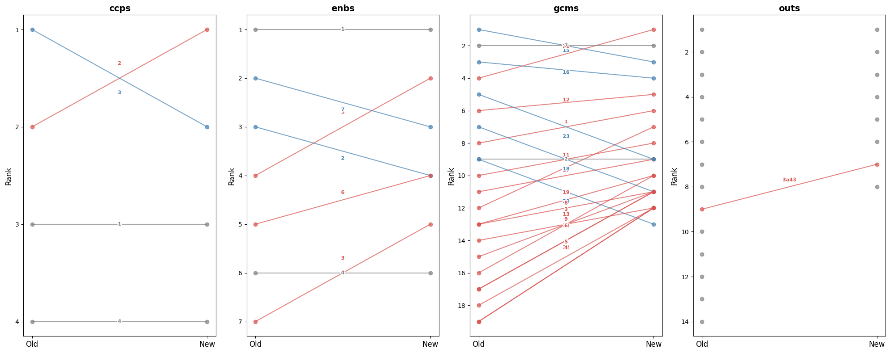
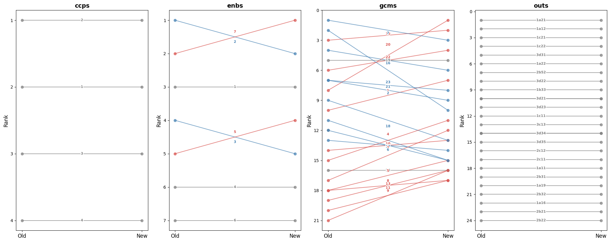
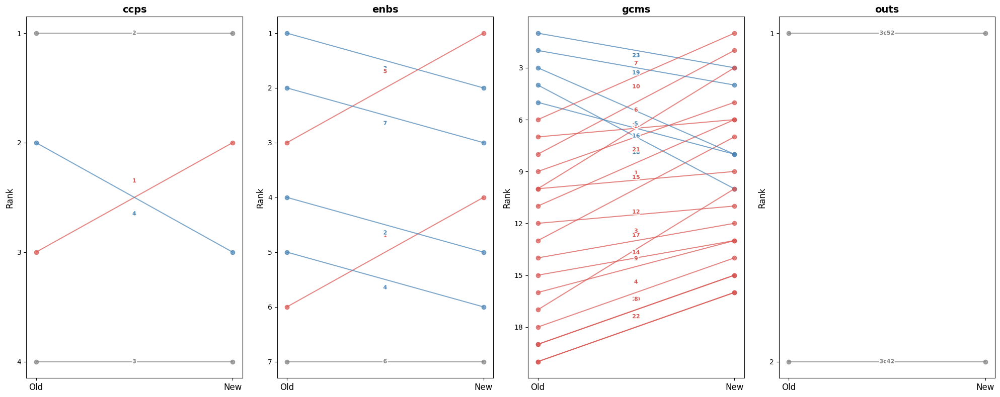
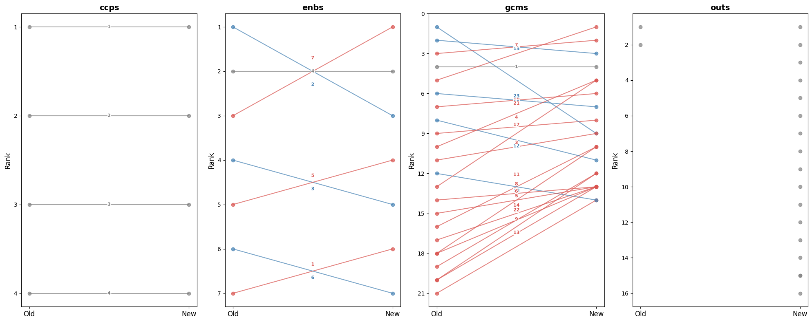
plot_rank_changes(dfs[dfs.evl_id == '760568a15e144bcfb88dbbd50247dc51'])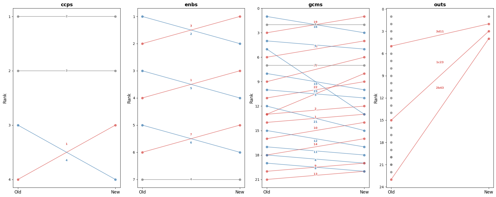
q = 'mapping_type == "gcms" and evl_id == "760568a15e144bcfb88dbbd50247dc51"'
print(dfs.query(q)[['mapping_type', 'theme_id', 'score_old', 'score_new', 'rank_old', 'rank_new']])
info_evl('760568a15e144bcfb88dbbd50247dc51') mapping_type theme_id score_old score_new rank_old rank_new
97 gcms 1 0.28 0.20 14.0 13.0
98 gcms 10 0.22 0.18 16.0 14.0
99 gcms 11 0.18 0.05 17.0 18.0
100 gcms 12 0.25 0.06 15.0 17.0
101 gcms 13 0.05 0.03 21.0 20.0
102 gcms 14 0.15 0.08 18.0 16.0
103 gcms 15 0.48 0.30 8.0 10.0
104 gcms 16 0.91 0.82 1.0 3.0
105 gcms 17 0.45 0.55 9.0 6.0
106 gcms 18 0.58 0.65 6.0 4.0
107 gcms 19 0.85 0.88 3.0 1.0
108 gcms 2 0.31 0.22 13.0 12.0
109 gcms 20 0.31 0.38 13.0 8.0
110 gcms 21 0.32 0.15 12.0 15.0
111 gcms 22 0.35 0.32 11.0 9.0
112 gcms 23 0.68 0.20 5.0 13.0
113 gcms 3 0.38 0.25 10.0 11.0
114 gcms 4 0.15 0.04 18.0 19.0
115 gcms 5 0.72 0.62 4.0 5.0
116 gcms 6 0.88 0.85 2.0 2.0
117 gcms 7 0.52 0.45 7.0 7.0
118 gcms 8 0.12 0.03 19.0 20.0
119 gcms 9 0.08 0.04 20.0 19.0THEMATIC EVALUATION OF IOM’S LABOUR MIGRATION AND MOBILITY STRATEGY AND INITIATIVES
Year: 2023 | Organization: IOM | Countries: Worldwide
Documents: 5 available
ID: 760568a15e144bcfb88dbbd50247dc51
print(dfs[dfs.evl_id == '760568a15e144bcfb88dbbd50247dc51'][['mapping_type', 'theme_id', 'rank_old', 'rank_new', 'rank_diff']].query('mapping_type == "gcms"')) mapping_type theme_id rank_old rank_new rank_diff
97 gcms 1 14.0 13.0 1.0
98 gcms 10 16.0 NaN NaN
99 gcms 10 NaN 14.0 NaN
100 gcms 11 17.0 NaN NaN
101 gcms 11 NaN 18.0 NaN
102 gcms 12 15.0 NaN NaN
103 gcms 12 NaN 17.0 NaN
104 gcms 13 21.0 NaN NaN
105 gcms 13 NaN 20.0 NaN
106 gcms 14 18.0 NaN NaN
107 gcms 14 NaN 16.0 NaN
108 gcms 15 8.0 10.0 -2.0
109 gcms 16 1.0 NaN NaN
110 gcms 16 NaN 3.0 NaN
111 gcms 17 9.0 NaN NaN
112 gcms 17 NaN 6.0 NaN
113 gcms 18 6.0 NaN NaN
114 gcms 18 NaN 4.0 NaN
115 gcms 19 3.0 NaN NaN
116 gcms 19 NaN 1.0 NaN
117 gcms 2 13.0 12.0 1.0
118 gcms 20 13.0 NaN NaN
119 gcms 20 NaN 8.0 NaN
120 gcms 21 12.0 NaN NaN
121 gcms 21 NaN 15.0 NaN
122 gcms 22 11.0 NaN NaN
123 gcms 22 NaN 9.0 NaN
124 gcms 23 5.0 NaN NaN
125 gcms 23 NaN 13.0 NaN
126 gcms 3 10.0 11.0 -1.0
127 gcms 4 18.0 19.0 -1.0
128 gcms 5 4.0 5.0 -1.0
129 gcms 6 2.0 NaN NaN
130 gcms 6 NaN 2.0 NaN
131 gcms 7 7.0 NaN NaN
132 gcms 7 NaN 7.0 NaN
133 gcms 8 19.0 NaN NaN
134 gcms 8 NaN 20.0 NaN
135 gcms 9 20.0 19.0 1.0for rpt in r
plot_rank_changes(dfs[dfs.evl_id == '0d4309b702e00faac631be8d609934ce'])top_changed[top_changed].xs('enbs', level='mapping_type')evl_id
8dd2261100ff5d714e73b411eed043d5 True
1d7e6d2d445145d1d350b48b72b36681 True
760568a15e144bcfb88dbbd50247dc51 True
316c47c9dc19c820f3217434d4b93b28 True
0d4309b702e00faac631be8d609934ce True
e8d9427f4a9094f68e17307faa567d8b True
75bad4665ed458cce78740e3d86f72d0 True
f409b3f9a0671ec69a8591c425a45c1d True
a493c447cff3e03ca94024335d5c5c7a True
06fd0949dc874f388686461c19d2669c True
e21305a89aeb76fafa8f4270392d463a True
Name: changed, dtype: booltop_changed[top_changed].xs('ccps', level='mapping_type')evl_id
22cac1c000836253adc445993e101560 True
dba9eb1220368d28682d8531108e767d True
891448b7a4bf12763ea0579dd67e289d True
4c04ec0d3e651f7616190c6fc2dcfc18 True
Name: changed, dtype: bool#top_changed[top_changed].reset_index().query("mapping_type == 'enbs'")import seaborn as sns
import matplotlib.pyplot as plt
fig, axes = plt.subplots(1, df.mapping_type.nunique(), figsize=(20, 8), sharey=False)
for ax, (mt, grp) in zip(axes, df.groupby('mapping_type')):
colors = ['#d9534f' if x > 0 else 'steelblue' for x in grp.score_diff]
ax.barh(grp.theme_id.astype(str), grp.score_diff, color=colors)
ax.axvline(0, color='black', linewidth=0.8)
ax.set_title(mt)
ax.set_xlabel('Score diff')
ax.set_ylabel('Theme ID')
plt.tight_layout()
plt.show()
from matplotlib.patheffects import withStroke
fig, axes = plt.subplots(1, df.mapping_type.nunique(), figsize=(20, 8), sharey=False)
for ax, (mt, grp) in zip(axes, df.groupby('mapping_type')):
for _, row in grp.iterrows():
color = 'steelblue' if row.rank_diff < 0 else '#d9534f' if row.rank_diff > 0 else 'grey'
ax.plot([0, 1], [row.rank_old, row.rank_new], marker='o', color=color, alpha=0.7)
mid_y = (row.rank_old + row.rank_new) / 2
offset = -0.15 * row.rank_diff
ax.text(0.5, mid_y + offset, row.theme_id, ha='center', va='center', fontsize=8, fontweight='bold',
color=color, path_effects=[withStroke(linewidth=3, foreground='white')])
ax.set_xticks([0, 1])
ax.set_xticklabels(['Old', 'New'], fontsize=12)
ax.invert_yaxis()
ax.set_title(mt, fontsize=14, fontweight='bold')
ax.set_ylabel('Rank', fontsize=12)
plt.tight_layout()
plt.show()
I’ve remapped all $current_res reports, so I can compare mappings for all of them. What kind of questions could we ask? - “does GCM 23 systematically get lower rank on average?”
🤖Reply🤖
🧠🧠🧠🧠🧠🧠🧠🧠🧠🧠🧠🧠🧠🧠
Great starting point! Here are some useful directions:
Systematic bias / directional shifts - Does a specific theme (e.g. GCM 23) consistently score lower / rank lower across reports? - Which themes show the most consistent direction of change (always up or always down)? - Are score drops concentrated in specific mapping types (e.g. gcms more affected than ccps)?
Magnitude of change - Which themes have the largest average |score_diff| across reports? - What’s the distribution of pct_change — are most changes small noise or substantial? - Are there outlier reports where changes are much larger than average?
Rank stability - Which themes are most rank-stable (low variance in rank_diff) across reports? - How often does the top-ranked theme change between old and new?
Report-level - Which reports changed the most overall (e.g. mean |score_diff| per report)? - Are there reports where the set of “high relevance” themes (e.g. score > 0.5) changed substantially?
Cross-mapping consistency - Do reports that show a big drop in a GCM theme also show a drop in the related SRF output?
Your GCM 23 question is a good one to start with — it’s essentially: across all reports, what is the mean rank_diff for GCM 23? Shall I write that up, along with a small summary table for all themes?
df = compare_mappings(current_res[0], DATA_PATH/'results', LATEST_TAG_PATH).pipe(add_diffs).pipe(add_ranks).pipe(add_pct_change)
df.head()| mapping_type | theme_id | theme_title_x | score_old | theme_title_y | score_new | score_diff | is_new | is_dropped | rank_old | rank_new | rank_diff | pct_change | |
|---|---|---|---|---|---|---|---|---|---|---|---|---|---|
| 0 | ccps | 1 | Integrity, Transparency and Accountability | 0.45 | Integrity, Transparency and Accountability | 0.38 | -0.07 | False | False | 2.0 | 3.0 | -1.0 | -15.555556 |
| 1 | ccps | 2 | Equality, Diversity & Inclusion | 0.72 | Equality, Diversity & Inclusion | 0.66 | -0.06 | False | False | 1.0 | 1.0 | 0.0 | -8.333333 |
| 2 | ccps | 3 | Protection-centred | 0.38 | Protection-centred | 0.42 | 0.04 | False | False | 3.0 | 2.0 | 1.0 | 10.526316 |
| 3 | ccps | 4 | Environmental Sustainability | 0.12 | Environmental Sustainability | 0.05 | -0.07 | False | False | 4.0 | 4.0 | 0.0 | -58.333333 |
| 4 | enbs | 1 | Workforce | 0.28 | Workforce | 0.15 | -0.13 | False | False | 6.0 | 6.0 | 0.0 | -46.428571 |
dfs = pd.concat([
compare_mappings(
d,
DATA_PATH/'results',
LATEST_TAG_PATH).pipe(add_diffs).pipe(add_ranks).pipe(add_pct_change)
for d in current_res])dfs = pd.concat([
compare_mappings(d, DATA_PATH/'results', LATEST_TAG_PATH).pipe(add_diffs).pipe(add_ranks).pipe(add_pct_change)
for d in current_res], ignore_index=True)dfs.head()| mapping_type | theme_id | theme_title_x | score_old | theme_title_y | score_new | score_diff | is_new | is_dropped | rank_old | rank_new | rank_diff | pct_change | |
|---|---|---|---|---|---|---|---|---|---|---|---|---|---|
| 0 | ccps | 1 | Integrity, Transparency and Accountability | 0.45 | Integrity, Transparency and Accountability | 0.38 | -0.07 | False | False | 2.0 | 3.0 | -1.0 | -15.555556 |
| 1 | ccps | 2 | Equality, Diversity & Inclusion | 0.72 | Equality, Diversity & Inclusion | 0.66 | -0.06 | False | False | 1.0 | 1.0 | 0.0 | -8.333333 |
| 2 | ccps | 3 | Protection-centred | 0.38 | Protection-centred | 0.42 | 0.04 | False | False | 3.0 | 2.0 | 1.0 | 10.526316 |
| 3 | ccps | 4 | Environmental Sustainability | 0.12 | Environmental Sustainability | 0.05 | -0.07 | False | False | 4.0 | 4.0 | 0.0 | -58.333333 |
| 4 | enbs | 1 | Workforce | 0.28 | Workforce | 0.15 | -0.13 | False | False | 6.0 | 6.0 | 0.0 | -46.428571 |
dfs[(dfs.mapping_type=='gcms') & (dfs.theme_id=='23')]['pct_change'].describe()count 20.000000
mean -65.511802
std 23.376751
min -86.956522
25% -79.801829
50% -74.264706
75% -61.572967
max -15.294118
Name: pct_change, dtype: float64dfs[(dfs.mapping_type=='gcms') & (dfs.theme_id=='23')].score_diff.describe()count 20.000000
mean -0.435000
std 0.188582
min -0.800000
25% -0.572500
50% -0.440000
75% -0.345000
max -0.130000
Name: score_diff, dtype: float64Scores diff
dfs[(dfs.mapping_type=='gcms') & (dfs.theme_id=='23')].score_diff.hist()
import seaborn as sns, matplotlib.pyplot as plt
gcm_dfs = dfs[dfs.mapping_type=='gcms'].copy()
gcm_dfs['theme_id'] = gcm_dfs['theme_id'].astype(int)
gcm_dfs = gcm_dfs.sort_values('theme_id')
f, ax = plt.subplots(figsize=(14, 6))
sns.violinplot(data=gcm_dfs, x='theme_id', y='score_diff', hue='theme_id', legend=False, bw_adjust=.5, cut=1, linewidth=1, palette="Set3")
ax.axhline(0, color='red', linewidth=0.8, linestyle='--')
ax.set(xlabel='GCM objective', ylabel='score diff (new − old)')
sns.despine(left=True, bottom=True)
plt.tight_layout()
def plot_score_diffs(dfs, mapping_type, xlabel='Theme', col='score_diff'):
"Violin plot of score diffs (new − old) per theme for a given mapping type"
d = dfs[dfs.mapping_type==mapping_type].copy()
d['theme_id'] = d['theme_id'].astype(int)
d = d.sort_values('theme_id')
f, ax = plt.subplots(figsize=(14, 6))
sns.violinplot(data=d, x='theme_id', y=col, hue='theme_id', legend=False, bw_adjust=.5, cut=1, linewidth=1, palette="Set3")
ax.axhline(0, color='red', linewidth=0.8, linestyle='--')
ax.set(xlabel=xlabel, ylabel=f'{col} (new − old)', title=mapping_type)
sns.despine(left=True, bottom=True)
plt.tight_layout()plot_score_diffs(dfs, 'gcms', 'GCM objective')
plot_score_diffs(dfs, 'gcms', 'GCM objective')
plot_score_diffs(dfs, 'enbs', 'SRF Enablers')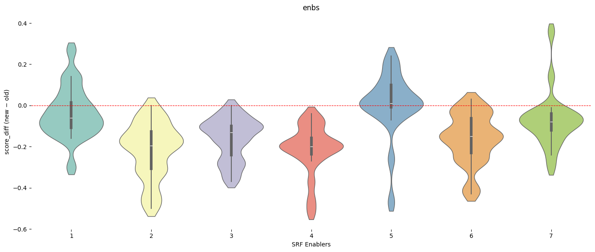
plot_score_diffs(dfs, 'ccps', 'SRF Cross-Cutting Priorities')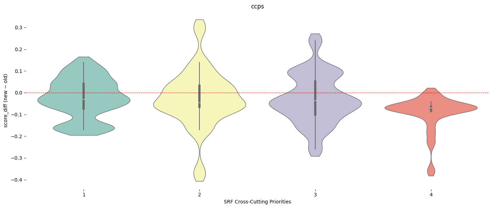
dfs.columnsIndex(['mapping_type', 'theme_id', 'theme_title_x', 'score_old',
'theme_title_y', 'score_new', 'score_diff', 'is_new', 'is_dropped',
'rank_old', 'rank_new', 'rank_diff', 'pct_change'],
dtype='str')Ranks diff
plot_score_diffs(dfs, 'gcms', 'GCM Objectives', col='rank_diff')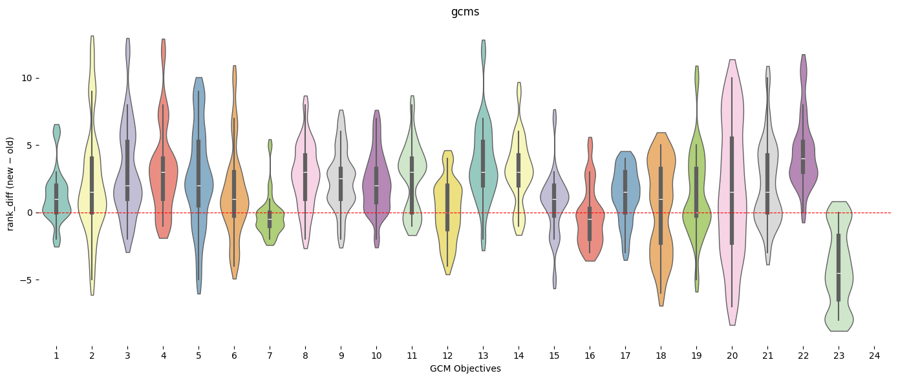
plot_score_diffs(dfs, 'enbs', 'SRF Enablers', col='rank_diff')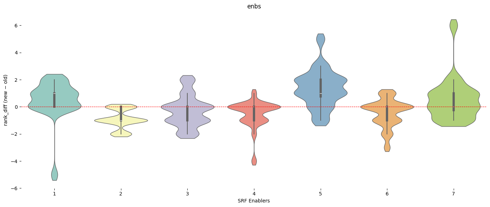
plot_score_diffs(dfs, 'ccps', 'SRF Cross-Cutting Priorities', col='rank_diff')
plot_score_diffs(dfs[dfs.rank_old <= 3], 'gcms', 'GCM Objectives', col='rank_diff')Let’s try to answer this question: How often does the top-ranked theme change between old and new?
Reports and mapping type where top ranked theme changed
print(top_changed[top_changed].reset_index()[['eval_id','mapping_type']].sort_values('mapping_type')) eval_id mapping_type
20 4c04ec0d3e651f7616190c6fc2dcfc18 ccps
5 22cac1c000836253adc445993e101560 ccps
18 891448b7a4bf12763ea0579dd67e289d ccps
15 dba9eb1220368d28682d8531108e767d ccps
0 8dd2261100ff5d714e73b411eed043d5 enbs
1 1d7e6d2d445145d1d350b48b72b36681 enbs
2 760568a15e144bcfb88dbbd50247dc51 enbs
21 e21305a89aeb76fafa8f4270392d463a enbs
17 06fd0949dc874f388686461c19d2669c enbs
8 316c47c9dc19c820f3217434d4b93b28 enbs
16 a493c447cff3e03ca94024335d5c5c7a enbs
10 0d4309b702e00faac631be8d609934ce enbs
12 e8d9427f4a9094f68e17307faa567d8b enbs
13 75bad4665ed458cce78740e3d86f72d0 enbs
14 f409b3f9a0671ec69a8591c425a45c1d enbs
11 0d4309b702e00faac631be8d609934ce gcms
9 316c47c9dc19c820f3217434d4b93b28 gcms
6 22cac1c000836253adc445993e101560 gcms
3 760568a15e144bcfb88dbbd50247dc51 gcms
22 e21305a89aeb76fafa8f4270392d463a gcms
7 22cac1c000836253adc445993e101560 outs
19 891448b7a4bf12763ea0579dd67e289d outs
4 760568a15e144bcfb88dbbd50247dc51 outs
23 e21305a89aeb76fafa8f4270392d463a outsdef plot_rank_changes(df):
"Slope chart of rank changes (old → new) per mapping type, coloured by direction"
fig, axes = plt.subplots(1, df.mapping_type.nunique(), figsize=(20, 8), sharey=False)
for ax, (mt, grp) in zip(axes, df.groupby('mapping_type')):
for _, row in grp.iterrows():
color = 'steelblue' if row.rank_diff < 0 else '#d9534f' if row.rank_diff > 0 else 'grey'
ax.plot([0, 1], [row.rank_old, row.rank_new], marker='o', color=color, alpha=0.7)
ax.text(0.5, (row.rank_old + row.rank_new) / 2 + (-0.15 * row.rank_diff), row.theme_id,
ha='center', va='center', fontsize=8, fontweight='bold', color=color,
path_effects=[withStroke(linewidth=3, foreground='white')])
ax.set_xticks([0, 1])
ax.set_xticklabels(['Old', 'New'], fontsize=12)
ax.invert_yaxis()
ax.set_title(mt, fontsize=14, fontweight='bold')
ax.set_ylabel('Rank', fontsize=12)
plt.tight_layout()
plt.show()#dfs[dfs.eval_id == '0d4309b702e00faac631be8d609934ce']plot_rank_changes(dfs[dfs.eval_id == '0d4309b702e00faac631be8d609934ce'])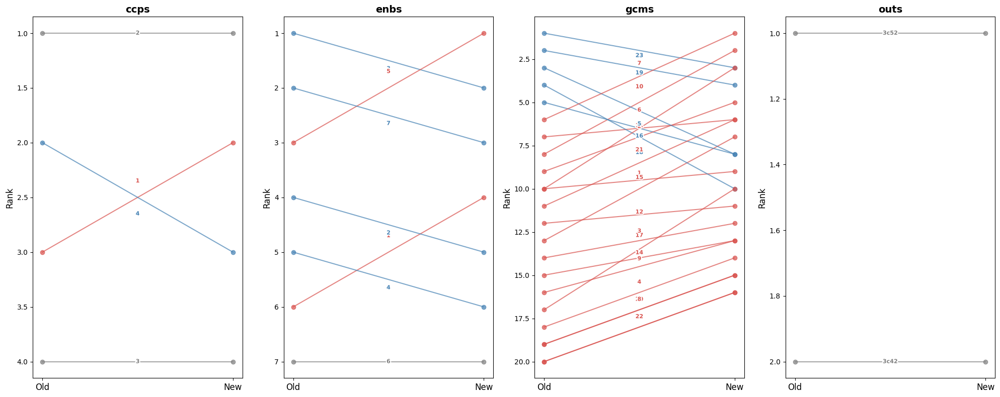
def plot_score_diffs_bar(df):
"Bar chart of score diffs (new − old) per theme, coloured by direction, faceted by mapping type"
fig, axes = plt.subplots(1, df.mapping_type.nunique(), figsize=(20, 8), sharey=False)
for ax, (mt, grp) in zip(axes, df.groupby('mapping_type')):
ax.barh(grp.theme_id.astype(str), grp.score_diff, color=['#d9534f' if x > 0 else 'steelblue' for x in grp.score_diff])
ax.axvline(0, color='black', linewidth=0.8)
ax.set(title=mt, xlabel='Score diff', ylabel='Theme ID')
plt.tight_layout()
plt.show()plot_score_diffs_bar(dfs[dfs.eval_id == '0d4309b702e00faac631be8d609934ce'])
def plot_scores_comparison(df, eval_id, mapping_type):
"Grouped bar chart of old vs new scores per theme for a given report and mapping type"
title = info_eval(eval_id).meta['Title']
title_pretty = title if len(title) < 80 else title[:80] + '...'
d = df[(df.eval_id==eval_id) & (df.mapping_type==mapping_type)].copy()
d['theme_id'] = d['theme_id'].astype(int)
d = d.sort_values('theme_id')
x = range(len(d))
f, ax = plt.subplots(figsize=(14, 5))
ax.bar([i-0.2 for i in x], d.score_old, width=0.4, label='old', color='steelblue', alpha=0.8)
ax.bar([i+0.2 for i in x], d.score_new, width=0.4, label='new', color='#d9534f', alpha=0.8)
ax.set_xticks(list(x))
ax.set_xticklabels(d.theme_id)
ax.set(xlabel='Theme ID', ylabel='Score', title=f'{mapping_type} — {title_pretty}')
ax.legend()
plt.tight_layout()plot_scores_comparison(dfs, '316c47c9dc19c820f3217434d4b93b28', 'gcms')
plot_scores_comparison(dfs, '316c47c9dc19c820f3217434d4b93b28', 'enbs')
df_top_changed = top_changed[top_changed].reset_index()[['eval_id','mapping_type']]for id_ in df_top_changed[df_top_changed.mapping_type == 'gcms'].eval_id:
plot_scores_comparison(dfs, id_, 'gcms')


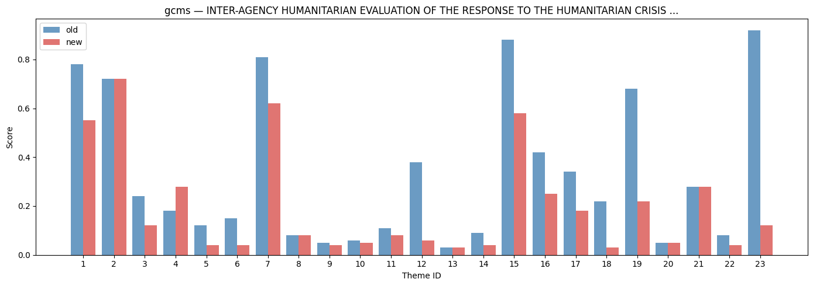
for id_ in df_top_changed[df_top_changed.mapping_type == 'enbs'].eval_id:
plot_scores_comparison(dfs, id_, 'enbs')
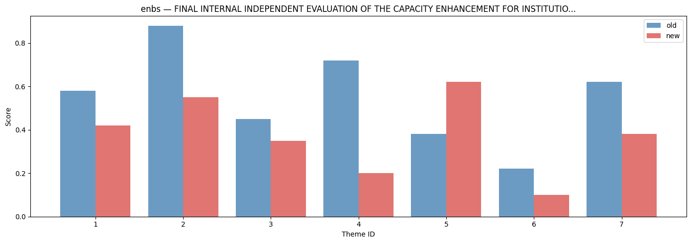

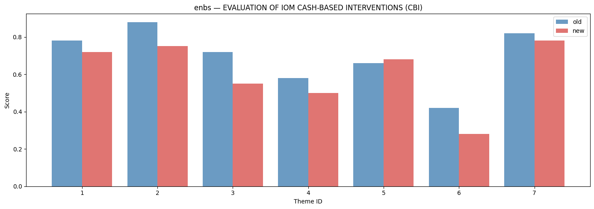
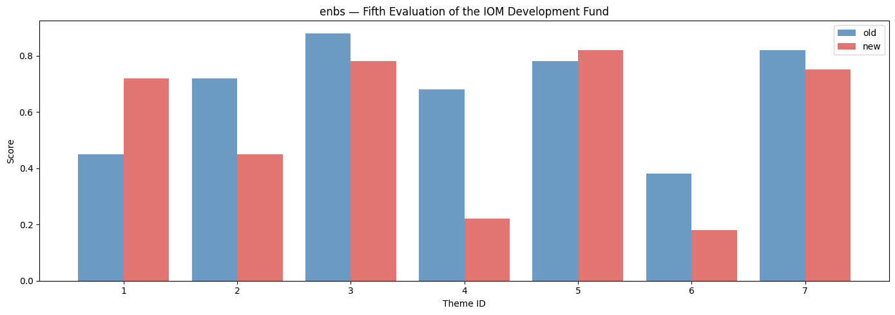

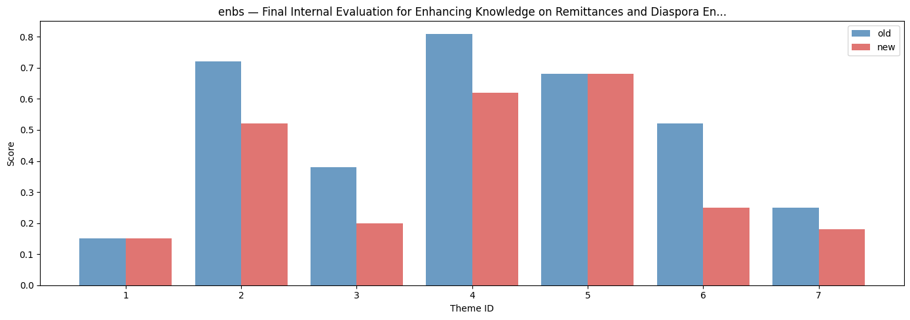

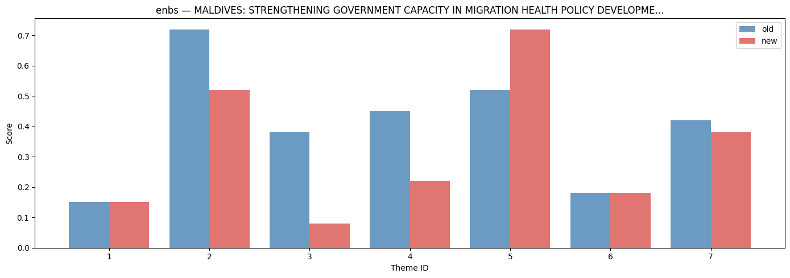
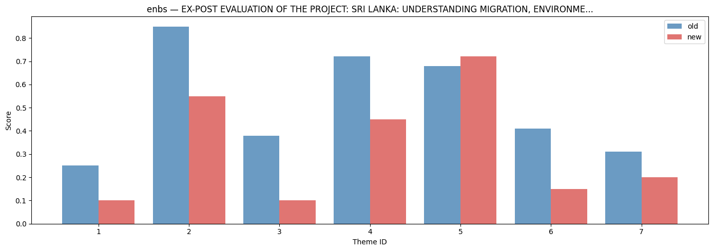

for id_ in df_top_changed[df_top_changed.mapping_type == 'ccps'].eval_id:
plot_scores_comparison(dfs, id_, 'ccps')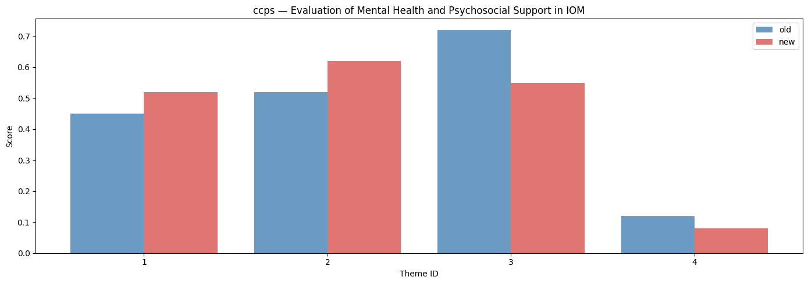